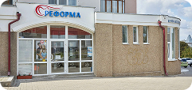
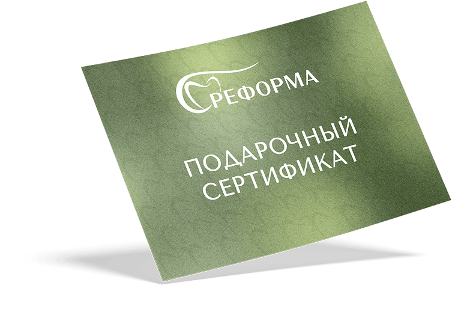
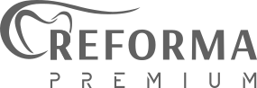
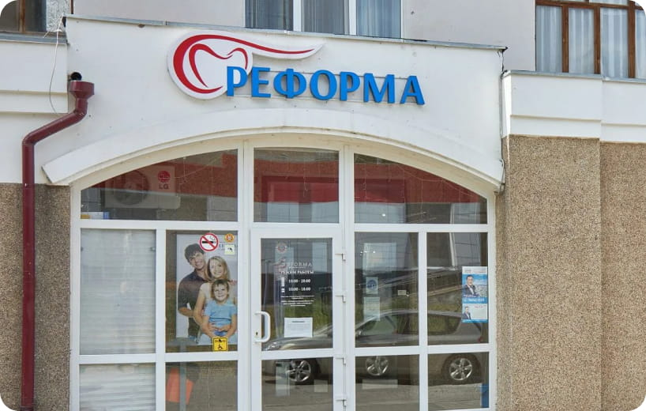
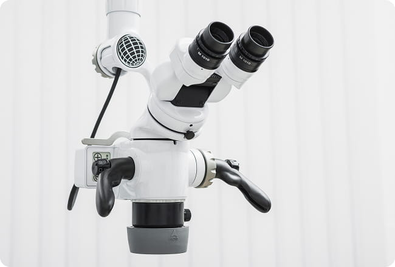

Спасаем зубы в самых сложных случаях, когда другие клиники предлагают только удаление
Подбираем оптимальный план лечения под вашу ситуацию и бюджет. Консультируем бесплатно
Все стоматологические направления, цифровая диагностика и профильные врачи – в одной системе клиник

* Можно потратить не более 50% от номинала сертификата за 1 визит
Выдается однократно - только новым пациентам




Сеть стоматологий "Реформа" работает только с частными страховыми компаниями по системе ДМС - добровольного медицинского страхования. К ним относятся: страховая акционерная компания АльфаСтрахование Югория Страхование ВСК РЕСО
Сеть стоматологий "Реформа" работает только с частными страховыми компаниями по системе ДМС - добровольного медицинского страхования. К ним относятся: страховая акционерная компания АльфаСтрахование Югория Страхование ВСК РЕСО
Сеть стоматологий "Реформа" работает только с частными страховыми компаниями по системе ДМС - добровольного медицинского страхования. К ним относятся: страховая акционерная компания АльфаСтрахование Югория Страхование ВСК РЕСО
Сеть стоматологий "Реформа" работает только с частными страховыми компаниями по системе ДМС - добровольного медицинского страхования. К ним относятся: страховая акционерная компания АльфаСтрахование Югория Страхование ВСК РЕСО
Сеть стоматологий "Реформа" работает только с частными страховыми компаниями по системе ДМС - добровольного медицинского страхования. К ним относятся: страховая акционерная компания АльфаСтрахование Югория Страхование ВСК РЕСО
{kind=link}